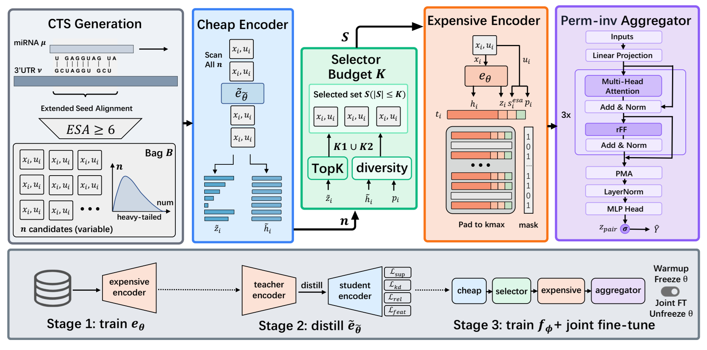
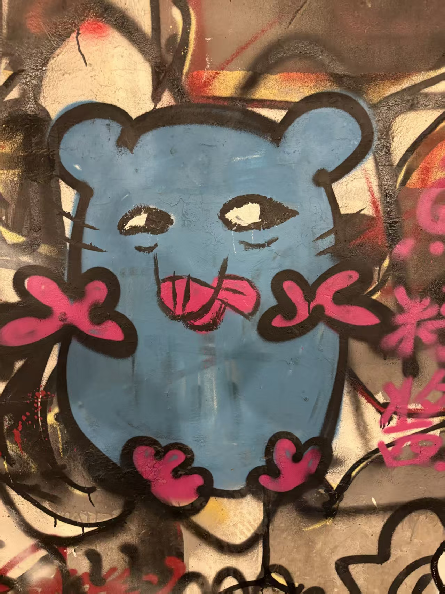
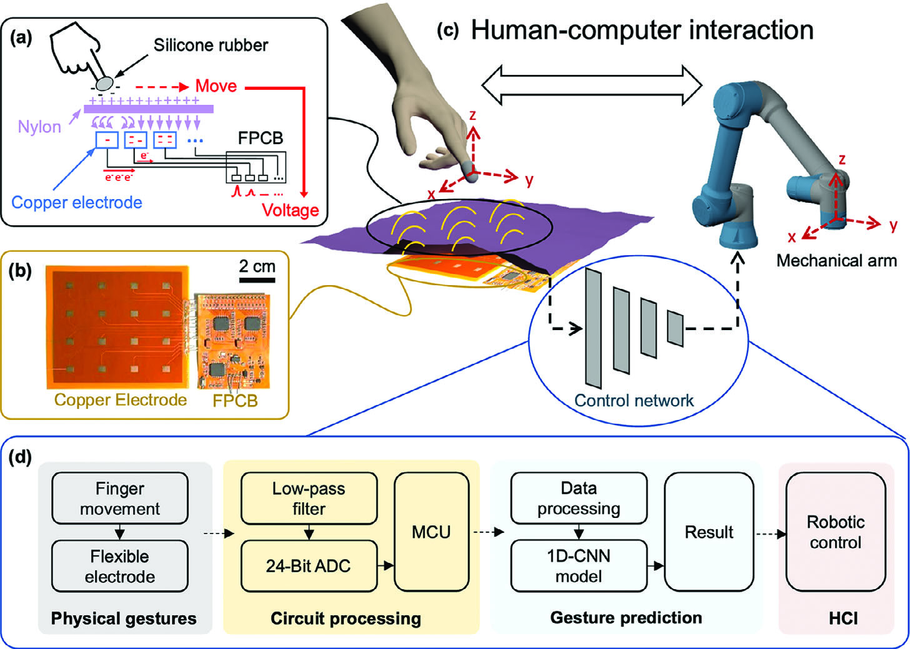
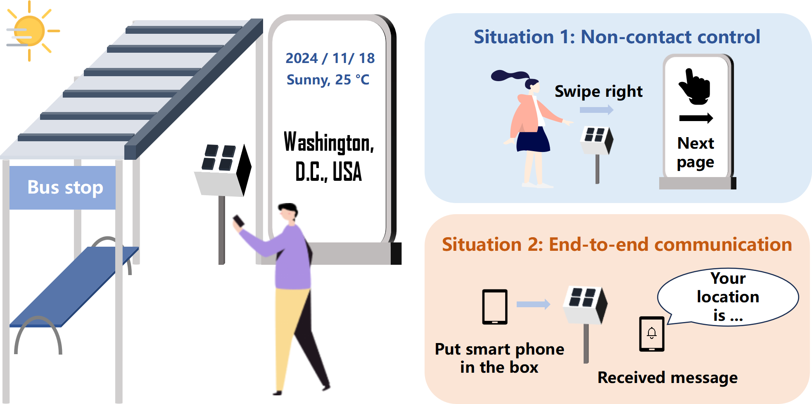

PAIR-Former: Budgeted Relational MIL for miRNA Target Prediction
Jiaqi Yin, Baiming Chen, Jia Fei, Mingjun Yang

Undergraduate Researcher · Harbin Institute of Technology
I am an undergraduate student majoring in Artificial Intelligence at Harbin Institute of Technology. My research interests include embodied intelligence and robotics.
I am currently a visiting research student at Zhongguancun Academy, supervised by Prof. Ce Hao. During my gap year, I was a visiting student at SSR Group, Tsinghua SIGS (supervised by Prof. Wenbo Ding) and X-Institute (supervised by Prof. Wenzeng Zhang) in Shenzhen.
I am actively seeking PhD opportunities starting Fall 2027. If you think I could be a good fit for your group, please feel free to reach out!


Email: yjqhit@gmail.com | 2078004110@qq.com
* Equally contributed, † corresponding author.

Jiaqi Yin, Baiming Chen, Jia Fei, Mingjun Yang

Qinghao Xu, Junhao Gong, Jiayi Chen, Yimeng Zhang, Hongfa Zhao, Jiaqi Yin, Runze Zhao, Chuqiao Lyu, Wenbo Ding, Changsheng Wu

Liguang Ruan, Chenxin Liang, Jiaqi Yin, Jiarong Li, Xiaojun Liang, Wenbo Ding
A control wrapper for Franka Research 3 aimed at embodied AI (RL, IL, VLA). Supports single-machine and dual-machine deployment with 1kHz FCI, interpolation, and safety boundaries.